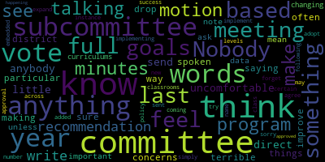
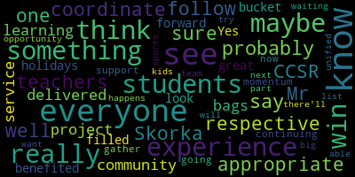
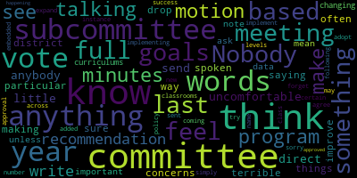
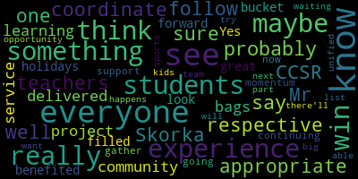

total time: 23.5 minutes
total words: 3839
{kind=link}
total time: 1.65 minutes
total words: 294

{kind=link}
total time: 2.5 minutes
total words: 455

total time: 1.28 minutes
total words: 193

[McLaughlin]: Superintendent and our Director of Pupil Services among others. So thank you. This subcommittee was started a few years ago at the request of the Special Education Parent Advisory Council. Our co-chairs here are here tonight for the Medford Special Ed Parent Advisory Council, Tonya Sullivan, hi Tonya, and Alex Lorick. And again, the subcommittee was started a few years ago with their request in mind to be active participate participants in special education concerns and problems of practice to work towards collaborating on policy. We're glad to have them here tonight. Our format last year, we had tried during the pandemic to split the meeting. The committee was renamed or reconstituted as the Special Education Behavioral Health Subcommittee. Last year, we were trying to do meetings that were divided between those two topics. And we've decided, based on our meeting last month, we decided to consider a new format for this year, where we are having every other topical meeting. So in other words, the current meeting is special education, next month meeting will be specific to behavioral health, and then we'll stagger each month, every other month for meetings, and that the feeling was that that would give us time in between the meetings to actively work on some of the issues and or concerns that were raised. And so in our last meeting, I can share the screen, my screen, and pull up our minutes from the last meeting. Can you guys see my screen? Yes. Yes. Okay. And so generally we came to that weren't a lot there was not a lot of participation at that meeting so I just want to go here to highlight sort of what we had been talking about as what we'll look at is the the special education proposed of practice to work on, and then I would like to put the proposed problem of practice out for discussion for the subcommittee to see if there's anything additional folks want to add or something altogether different. But essentially it was identifying ways in which to build community and school friendships among our students with and without disabilities, specifically through recreational programming, after school activities and sports organizations, as well as in school meaningful inclusion. along with developing supportive language, recommendations for best practices. So that last sentence sort of comes across what we're seeing in a number of these different entities, recreation, afterschool, sports organizations, is sort of not universal language and perhaps not, although well-intentioned, perhaps not the most thoughtful, I guess, into the disability community. So we want to be aware of how we can make recommendations around some of the printed language we see and maybe some of the other things. So I would encourage folks to just sort of, you know, unmute themselves or if it gets a little too chaotic, which I doubt, we can we can, you know, raise hands. But if folks want to unmute themselves, and if you do, please introduce yourself. Again, because I know we all know each other here, but there may be people watching. Thank you.
[Tanya Sullivan]: Hi, I'm Tonya Sullivan, co-chair of Medford CPAC. I'm also a parent. I just wanted to ask Carla and administration, you know, what is the possibility of have now that we've had unified sports starting, and that's been a huge success, and it's going to be expanding into the middle school and everything, and the adaptive PE. Are there any thoughts on doing any type of programming in the summer, like a camp, like a week's camp or something for that? I just was thinking that that might be a good idea on how to collaborate with the community and with the students.
[Bowen]: So, I mean, typically we have our extended school year programming for our students with disabilities, but I do, you know, we, last year we thought about internally, like how do we add some recreational opportunities for students, some social opportunities for students that is not, you know, IEP related that has to be addressed through extended school year programming. I think it's something we should look at to expand upon the unified sports, and to offer some sort of activities recreational activities. Yeah, I don't know what it would look like but I do think it's, it's something that I think we should probably have like a work group put together, you know what, what our community members looking for, what would that look like, you know, would it be before. extended school year starts because sometimes we have a one or two week break in between. And also how does that, is that something that we work with Medford Recreation, Summer Fun, that sort of thing. So there's a lot of players that we could get, bring to the table to discuss this and what it would look like, but also have the lens of how do we meet our students with disabilities, their needs, But also with their typical pairs as well. I don't know if that's like the, the, the direction that you were thinking Tanya.
[Unidentified]: Sorry guys.
[Tanya Sullivan]: Yeah, and I'm, we had a meeting last night with Medford recreation and the mayor. And there were several people at that meeting, which is, you know, talking about kind of collaborating. So I just didn't know from an administration point of view what that would look like or, you know, what the regulations are around that.
[McLaughlin]: So if I might add, we had a meeting last night with Medford Recreation to discuss adaptive and inclusive programming with Medford Recreation. And there was a community member there, Shanine Pelliquin, who's done a lot of work in this area, as you folks probably know, who talked about other districts and how they have worked with recreation departments and summer fun camps to sort of integrate all of these aspects. the students are actually receiving ESY services at the summer fun camp so the kids are getting their ESY service needs met and are also getting their social emotional inclusive needs met and so that was the the basis of the discussion really around you know what what are other communities doing what does it look like how could that look here and I think what we what I heard anyway from that that meeting especially was that you know oftentimes even with the progress that we're making in having a recreation department and having an adaptive program at the recreation department and having an adaptive PE teacher that there's still not meaningful inclusion yet but we know that that's the goal around equity especially because there's so many limits to you know what those programs look like and for example that The adaptive programming host about 10 students with disabilities, you know, in one given session, because they're, they're locked out after you know they have so much enrollment. And so, at the same time we know that in the past, special education. school based special education team has been providing training and support to summer fun to ensure. Meaningful inclusion, they are so sort of it was it was this popcorn popcorn of ideas of what could this look like across these. You know issues, especially because we see the department does need training around inclusive and therapeutic. recreation therapeutic is different obviously that's more sort of license specific but inclusive, especially using CCSR volunteers and other volunteers, you know there's it's clear that there's certainly well intentioned. volunteers and also there's a need for for training and I know in the past. Kathy was really open to providing that or and or you know, looking to a marker community to us to. do that. EMARC does not look like they have, or CUNITAS, which is the local ARC, which is an advocacy group for people with disabilities, does not seem to have much going in the way of recreation right now just because of COVID.
[Unidentified]: So that was a little background for that meeting. Alex?
[Alexandra Lauric]: Yeah, so I have a question.
[McLaughlin]: I'm sorry. I'm sorry.
[Alexandra Lauric]: Yeah, I'm Alex Lorica. the mom of a teenager with intellectual disabilities and the co-chair of the CPAC. And I'm sorry I missed last week, last meeting that maybe this was talk about, but I was wondering what is happening with the goals like of previous years, like two years ago, you know, we talk about disability awareness curriculum and last year we talk about the friendship, the best buddies and maybe bringing Carla's program at middle school. And I was wondering what is the, The plan of the subcommittee subcommittee if there is one to kind of keep track of what's going on with those and being people back and monitor progress in some way.
[McLaughlin]: I think that's a great question and I would love to sort of, you know, put that out to, you know, the group because I think some data around, you know, what the progress is for the group is really great and what the recommendations were certainly, you know, we had a recommendation for their disability awareness program and I know Joan can update us on what's happening this year and what the milestones in that program have been. I've been really interested in, and I think it's really helpful for us to potentially share out. And when we're talking about policy recommendations at the end of the year, data around evaluations on that program, how people are responding to it, what it looks like, how it's growing. I know Susanna is not here tonight, but she can certainly give an update. And then I'm sure you know that Carla, who was doing the common grounds, reverse inclusion model at the high school with Mr. score currency CSR Carla has taken another position as an adaptive are adaptive. PE instructor. So I think the friendship-based one is, especially if that's going to be something we're focusing on for this session, is one that needs to grow. And I think the best buddies was a really great question and initiative that Heather McKinnon, Glennon, and Marissa Isbell had brought before us. And then obviously COVID happened, but I think, you know, you know, that's something that could be worth exploring too, but I'd love to hear what other folks think.
[Unidentified]: Joan, did you want to share about the disability awareness?
[Bowen]: Sure. So several years ago, Susanna Campbell, who is our coordinator, specialty coordinator, but oversees speech and language, has created this disability awareness. First, it was a professional development that was several weeks long or maybe several months long. And it was a really powerful, presentation I know Melanie had, she provides. background regarding disabilities. We also have parents, we have students that come to talk about disabilities. And then after that disability awareness came out, the disability, the need for a disability awareness curriculum in our schools. So CPAC has been fighting and really wanting to have this within our schools. So this year we are piloting the disability awareness curriculum. I believe it's at three different grade levels. There's elementary, a middle and a high school level. And each level is being introduced to one type of disability. And we hope to expand that over the course of the year so that when a student starts at kindergarten, by the time they finish in grade 12, They have learned about all these different disabilities in a natural way in the classroom. There are social stories. There are specific books that have been selected to do this. So that is where the disability awareness curriculum came out of. And I believe that Susanna will continue to do her disability awareness workshop in the early spring as she has done before. So we continue to recommend that, you know, all staff, administrators, people really take part in it because it is very powerful.
[McLaughlin]: So, and I would say, you know, we'll make sure that we ask Susanna to be on the next subcommittee meeting to talk about this more if you like, but I would also say, you know, that we can encourage data collection around what that's looking like so that at the end of the year, again, for the policy recommendations, you know, we have some measurable data if we want, if we intend to recommend expanding it at all.
[Bowen]: Yep, and I think that's what Susanna is sorry Alex what she's working on to is, you know, getting that data getting the feedback from the teachers. As to what's being implemented this year, maybe getting feedback on you know what's working what's not working is there anything that we need to revise going forward, but I will definitely talk to her about. getting some data collection and presenting to the subcommittee, maybe, you know, an update on where we're at right now. And then at the end of the, at the end of the close of the school year, you know, what's been done, how it was received, maybe get feedback from the teachers, the students, that sort of thing.
[Alexandra Lauric]: Yeah, and I wanted to let people know that in January, Susanna is gonna present for the CPAC on disability awareness curriculum and progress with that. And a question that I have, and I don't know, John, if you know about this, but maybe something that we could ask Susanna at some point. There was a discussion of involving maybe curriculum directors with this or how we can really, how we can place this as part of the curriculum. And I don't know if that happened already or not. We were talking maybe ELA or social studies or things like that.
[Bowen]: I believe Susanna has spoken to our director of humanities, but I can follow up on that to see what the status is because this is happening in the classrooms right now. And I do think she reached out to Dr. Chiesa regarding the books that were selected, that there's a conversation that this is what's happening, but we can get an update regarding that as well.
[McLaughlin]: Thank you. And I just want to recognize our subcommittee member. Ms. Stone has joined us. Thanks for joining, Mia. We're just discussing the goals for this year. In the past, we've worked on disability awareness and improving friendships through after school, before school, after school, sports and recreation. And we're identifying what the And what we're referring to is problem of practice that we want to work on this year as a subcommittee to move forward policy recommendations at the end of the year. And the other question that was mentioned, so we were just talking about the disability awareness curriculum that this group worked with Susanna Campbell on and has been received really well in the community among staff and just having some data collection around what that looks like. And then the other question that you had, Alex, was an update on the inclusion, meaningful inclusion in schools, which was, you know, we had been discussing last year the model that was used at the high school, which was the Common Ground Program. And Carla, Andre, and Michael Skorka were using that program, which was essentially a reverse inclusion model where the CCSR class was coming in, I think, monthly into the access class. with some specific goals. And I'm just wondering if Carla can update us on, I know Carla, I'm sure folks know Carla, Ms. Andre took a position as the adaptive PE instructor, which we're very pleased to have an adaptive PE program. But I'm wondering, to that point, you know, does Common Ground still exist as far as anybody knows?
[SPEAKER_10]: Yes, it still exists. I was actually in there the other day. And Joan, I'm not sure if you know the name of the program, but I know it's kind of like an outdoorsy program. And they came in and they took the, all the kids went into the woods. Do you know that it was it? Friends of the fells.
[Tanya Sullivan]: Waypoint Adventures.
[SPEAKER_10]: Yeah, Waypoint Adventures Charlotte.
[Tanya Sullivan]: And they went into the fells, Joan. So yes, you're right.
[SPEAKER_10]: So I know that was something they did during one of their common ground activities which is great that's a great idea that to you know pair with organizations like that. And it, they're coming into the classroom twice a cycle so the way that we run an A through F day. So it ends up being several times a month I would say. you know, when the new teacher came into that role, it was, it was very specifically told that this the program would continue. And I, you know, as far as I know, it is continuing very successfully. And maybe Tanya can speak a little bit on that, as she is a student in that class. So I don't know the details, aside from from, you know, that that one class that I was in so far, I'm working on getting in there a bit more, because we want to see it continue and spread to other levels too.
[Tanya Sullivan]: I will say that they've definitely been having it. Like you said, Carla, it's still continuing twice a cycle. They're doing a lot of different activities. And the Waypoint Adventure was actually one that CPAC sponsored for the kids to be able to do the hike and the fells with team building exercises. So it is definitely continuing. And I will definitely make sure that that's happening in that class anyway. but I'm not sure what they have scheduled coming up.
[McLaughlin]: And I think one of the reasons that we had talked about as a subcommittee about, you know, the best buddy program at the middle school was that we were talking about, you know, this, and again, this is reverse inclusion, to be clear, this is not inclusion, you know, so reverse inclusion is, as we said, you know, kids without disabilities coming into a already subseparate classroom. So it's not inclusion in the community or inclusion in a general education setting. It's a reverse inclusion model. But we had talked about, you know, or we had family members who had talked about wanting to expand or see things at the middle school level. And so that was some of the discussion that we had had last year. And so I guess the purpose of this meeting really is to identify if that's something that we want to continue to explore as a problem of practice for this group and what that would look like, or if there's something else that folks want to focus on for a problem of practice this year. So just to get us back on agenda topic, I want to make sure that that's what we're discussing.
[Tanya Sullivan]: I think what Alex had said about kind of you know, reassessing what the goals were in the past and, um, making sure that they don't just drop off as we get new goals. So maybe, maybe revisiting what the goals have been for the past a couple of years, uh, you know, kind of to see where we ended up with those and if we were happy with that, I'm, I I think at least for like the best buddies, I don't know that anything's been done, um, with that. And I know that COVID has, has, you know, kind of put a pause on some of that stuff, but I think we, I don't, I don't really think we should drop it. And I don't think we should continue with even more goals. If we want to definitely keep the goals going that we already had, that we have, that have not come to fruition. Just my thought.
[McLaughlin]: I hear you. I think that if so, if we want to, oh, sorry, member Rousseau.
[Ruseau]: I just feel a little uncomfortable that this is a subcommittee. We can't direct anybody to do anything at all, ever. We can send recommendations to the full committee to vote. And I feel like in this particular meeting, we're often doing and saying things as if the committee has spoken and it has not. So, I have no concerns about, you know, the goals and making sure we don't just drop last year's goals I think that's a terrible way to to improve the district. I just think it's important to note that until the full committee, get something to vote on. Nobody should be doing anything based on what we're talking about here. I mean, unless we ask for some data or something, but you know, like nobody should be changing curriculums or implementing a class program, you know, that we've just, we're talking about, sorry, I forget the name of it.
[McLaughlin]: Disability Awareness Curriculum. And we did vote on it last year. So nobody's changing anything. This was voted on last year to continue the disability awareness curriculum. But I think the committee recognizes that this is a subcommittee and that we bring our discussion to the committee after this meeting with our minutes. And then if there's items that need to be voted on, that we vote on them. So I don't think anybody's getting the impression that, you know, we're just moving ahead without any school committee approval, but I appreciate your concern.
[Ruseau]: If I may, I know that we vote on the minutes. I just don't see motions added coming out of our meeting to adopt a new policy or to just simply make a motion to, for instance, implement this program across a certain number of classrooms and levels. And then, you know, I think this committee could make a recommendation that in the following year to expand it based on our success from the last year. But I don't think that being embedded in minutes is not an approval by the committee to do anything. And I think we have to just try to write the words, because we have to write the words and this subcommittee agree to the words, and then they can be sent up as approved by the subcommittee. And I just don't see that happening.
[McLaughlin]: Well, I think that what we do is at the end of the year, we make policy recommendations that are voted on by the subcommittee, but it's not our position as school committee to be making, in my opinion, curriculum recommendations per se. That is, you know, the Director of Pupil Services and others have worked to create this disability curriculum. It's not up to the school committee, as far as I understand, to approve or disapprove of it. But we have made motions at the end of the year that our policy recommendations that we say we think that this disability awareness curriculum is appropriate and that, you know, as experts in the field of disability both as with lived experience and professional experience we make recommendations. Remember my stone.
[Mustone]: Thank you. Um, I was thinking just having two girls at the Andrews and how popular so many of the clubs are. I know that the CCSR is partnering with a mom who's teaching a sewing class to create toiletry bags, and then collect goods to stuff in the toiletry bags to give to the Bread of Life in Malden for their guests. So I didn't know, back to Tonya was talking about the buddy program. I didn't know if that could be a place that all kids could come together, pack the bags with their peers, and then follow up with maybe doing service projects together in conjunction with the buddy program. I don't know if that would be something that.
[McLaughlin]: Thank you. No, I think that's a great idea and especially with service project with CCSR and partnership at the middle school level and that was part of what the committee had been discussing how to expand to middle school, you know, some inclusive practice, particularly in these, you know, in these experiences where it was, you know, CCSR activities or wraparound activities. And we had a few family members that wanted to explore the Best Buddies option. They had met with Best Buddies. I had met with them as well. It had suddenly become much more affordable than it has in the past. And then this committee sort of was looking at the discussion of the common ground model at the high school and sort of looking at that as expanding to the middle school and using our internal resources as opposed to going outside to a best buddy program. And so that's where we left off. And what I'm hearing the CPAC, Tanya and Alex saying is that since those things have not really been moved forward, that they would still like to focus on what that actually could be and look like as a collective policy recommendation problem or practice that we look at at this school level. So this meeting is really to identify if that's what this subcommittee would like to work on. And I think those are great ideas in terms of if like we do want to work on a best buddies, you know, and suggest like do some. And, and to be clear, what we do is we research the ideas, and we come before the subcommittee and discuss them as a community group. And then if there are ideas that we think are valuable, we move them forward for a motion as a policy recommendation if needed to the school committee.
[Unidentified]: But I love that idea, Mia.
[McLaughlin]: I think getting the CCSR involved would be great.
[Mustone]: So I guess just to move forward, could I work with someone at the Andrews Middle School to at least get, I think this will be a short, successful service project that we could have all kids involved. I don't know if anyone wants, I don't know if I'm overstepping or if that's something I can reach out and work with the teachers at the Andrews.
[Edouard-Vincent]: So I would probably say what would be most appropriate would be if through the, I'm not sure who the respective teachers are that are doing the CCSR.
[Mustone]: It's miss been doing. And it's just, I think it's, it's, it's nice because the kids will have, they'll be able to see their impact so the sewing club is going to make the toiletry bags, and then they're going to do a drive for you know, little toothpaste or deodorant or what have you, they have a list from bread of life, it will go into the spring. And so, and I think it will just be a few, probably a few days that we'll meet after school to compile the toiletry bags and then pack up my van. But I think it'd be a great place for kids to be together and doing something fun and service to the community.
[Edouard-Vincent]: So I can do it to do for myself to also follow up with Mr. Skorka on that one as well. And coordinate that as a community service learning project.
[Mustone]: And then I just don't know if there's teachers, Joan, you would know who the best teachers are to invite?
[Bowen]: I was going to say, if you want to connect with me as well, and I can get the information, you know, the days of the week, the hours, how many students you're looking for. And then I can reach out to the special education staff at the Andrews to promote that and to encourage students to participate.
[Mustone]: And this literally just started in an email yesterday so we are fresh, you know, we're not. We're not joining something that's happening it's just just an email started yesterday so we are all together at the beginning. Okay, good.
[Edouard-Vincent]: get the bags delivered before the holidays?
[Mustone]: Is that the- I don't think so because they'll have to have a while to sew and the mom who sews has two groups because she only has 14 sewing machines. So I think she'll be a while before all the sewing kids will be able to sew their own toiletry bags. So I'm thinking probably more of the spring. Okay.
[Alexandra Lauric]: So I think this is, Mia, this is an afterschool project, right? Yes, yes. Yeah, so- So is that a hiccup? No, I mean, that's great. We've been also exploring ways of inclusion, reverse inclusion during the school day, because I think, for instance, transportation, it might be a barrier for students with disabilities. I don't know, John, I don't even know if you know how many students with disability participate in after school because they have some have the special transportation and things like that. So I was wondering if we could maybe at least part of that can explore ways to do it during the school day maybe. Definitely. You know, maybe in collaboration with the principals or whatever, so we can make the access of students with disabilities a little bit more easier.
[Bowen]: Just to point out that transportation shouldn't be a barrier for students being able to participate in these programs. So students with disabilities who have specialized transportation, they should stay after school and the transportation would be provided for them. We would need to know ahead of time how many students require transportation. We'd have to arrange it through my office, but I just want to be clear that If there's a student with a disability that has specialized transportation, they have every right to access any extracurricular activities. Awesome. Yeah. And we would highly encourage it, but it just does take a little bit of planning to set it up. So if we can communicate regarding that, and then we can find out how many students want to sign up and then who requires transportation, we would look at that.
[Mustone]: Okay, then I'll email you tomorrow, Joan. All right, sounds good. And whoever else wants to be on the email. I'll email everybody.
[McLaughlin]: So thank you, Mia. That's a really thoughtful idea. And I love Bread Alife. It's a great program. So, you know, I think that there's a number of, you know, issues as we were talking about before school, after school, athletics, recreation, all of those things. And to your point, Joan, you know, removing barriers for students with disabilities is a big part of what the subcommittee is really about and how to move these issues forward. So again, I would like to just put to the floor Um, you know, I don't know if folks want to, you know, again, have a couple of recommendations to suggest and then we can ask. I mean, I don't think that we need approval from the school committee to have a problem with practice for our school subcommittee. So I'm not going to suggest that. But I don't know here if you want to if there's anyone else that has recommendations on what would like to work on for this particular year. And what I'm hearing from our CPAC co-chairs, and I guess maybe we could do a raise of hands, are folks wanting to continue to work on meaningful inclusion in building friendships, and in and out of school, I guess, you know, through the programming that we discussed already, as the problem of practice, and if so, you know, maybe a raise of hands. And if there's if you are not interested in doing that, maybe a thumbs down, and people can talk about something else that they'd like to do. I'm not really sure. We did meet last month. And Joan, you know, had thought that, and I want to speak for you, Joan, but you know, in the meeting that we have last month, there was the discussion that, you know, continuing this work because we had a pandemic year, because we had, you know, the things, Carla moved on to another position and some other things that maybe we continue to explore as a group some of the options that we've discussed. So, you know, Mia gave a really great example of a, of an afterschool program model that could have some inclusion, but, or some model of inclusion, but, you know, again, we were looking at other, you know, entities and aspects and specifically the best buddies, you know, we're meeting again in two months, our next meeting is January for this group. So maybe between now and January, we can be, you know, potentially doing some research on the best buddies, we can be looking at CCSR and what they're doing, if anything around disability projects, we can also be talking to, you know, Susanna Campbell, I'm looking at what has happened in that realm with the Disability Awareness Program. I mean, these are a couple of the things that I'm thinking that are follow-ups to what we had been working on last year. And again, this culminates in that end of year meeting where we bring issues to the school committee, aside from advising them and letting them know about our meeting content, where we bring issues at the end of the year that we put forward for policy if needed. Do we wanna have a hands up, thumbs down? Yes, Mia, did you say yes?
[4thVVEd7zdo_SPEAKER_02]: I'm yes for our friendships. Yes. My favorite quote, quote, there's no strangers, just friends you haven't met yet.
[McLaughlin]: That is a nice Mia Mustone quote. Good, well, that's good. So I think maybe we could think about, again, I wanna look at our,
[Unidentified]: You're on mute, Melanie. You got muted. Sorry, I just said I wanted to look at our calendar. So bear with me one second. Okay, so we have.
[McLaughlin]: December 16th is the behavioral health session that will have a similar type meeting as we did tonight to confirm what the goal is for the year. And there was discussion that Stacey had just mentioning that maybe it goes like a January to January because we're already into the year that the goal sort of, you know, is a January to January sort of process, but we can talk about that for policy recommendations specifically, you know, because end of the year in June, then we're gone for the summer. And then it's looking at sort of How is the policy being implemented or is it being implemented, you know, starting up again so that's something to consider, but January 20 is our next special education topic driven meeting so between now and January 20, it gives us sort of two months if we, you know, are interested in working on some of these issues or goals and so I'm okay with reaching out to the two family members that were interested in exploring the Best Buddies program and doing some of the research around that and seeing what that entails and what that looks like. And I can bring that back to the subcommittee and report that out. Mia, maybe Member Mustone, if you wouldn't mind coming back and letting us know on the 20th about this Bread of Life program. how that progressed in terms of an afterschool project, that would be really helpful. Did somebody say that they were able to reach out to CCSR or were going to reach out to Mr. Skorka, was that you, Dr. Edouard-Vincent? Yes. Thank you. Particularly about the middle school stuff, but I also have an appointment scheduled with Mr. Skorka to talk about what disability-related projects the students have come up with, because I know that they've come up specifically with projects, so I would love to talk with them more. I know, Kate was on the call. Oh, yeah, Kate's on the call. Oh, hi, Kate. I didn't see your hand was raised. Let me let you talk. Sorry. Can you would you mind just introducing yourself to please?
[4thVVEd7zdo_SPEAKER_02]: Yes.
[SPEAKER_02]: You guys can you guys hear me? Hi, guys. I'm Kate Quinn program manager with recreation department. Sorry, I was In late, I couldn't get on, but it finally got in. I missed a little bit of everything. I was raising my hand to vote for inclusion for you.
[McLaughlin]: Yes. Yay, inclusion. Okay, good. Thanks, Kate. So, and Metro Recreation has, as the CPAC mentioned, been working around some of these topics that we've discussed around, you know, meaningful inclusion and how to expand that with the meeting that we had last night. And so that is going to be followed up on, Tanya and Alex, right? As the meeting was discussed last night, there's going to be another meeting Kate, I'm sure Danny and Kevin have likely looped you in around some of the questions that were really raised last night on how to improve and increase that meaningful inclusion. So maybe if I could delegate if folks are willing that Kate, Tanya and Alex might come back on January 20th with some update on the collaboration on the meaningful inclusion with the recreation. Absolutely. Would that be okay? So January 20th? Yes. And then if I understand correctly, Joan, you were going to circle back with Susanna to have her come back to us on the disability awareness piece and what the progress of that has been. And then I guess when we meet on January 20th, we can sort of think about what the next steps are for moving some of these problems with practice forward for Future discussion, is there anything else Miss Carla is there anything that you wanted to Carla I also just wanted to recognize you and say thank you so much for the unified sports program. that has been such good medicine, really exciting to watch. Going to the pizza party the other night and seeing the neurotypical peers with our students with disabilities and everyone getting medals and shirts with their names on it and everything. It was just like the best. I actually literally heard from a staff member say that it was It was the best, the single best experience the staff member has had in our schools in the past 20 months during this pandemic. And I thought that that was really quite remarkable. And I know that it's gonna continue to grow and expand and I'm excited by that and really, really grateful to have you in that role. Thank you.
[SPEAKER_10]: Thank you. I mean, I think it was great that we had such a successful first year because they can only get bigger and better from here, just the amount of people that came to the games we had so much support. And like you said kind of after a year where a couple years now where things are just so out of whack it did feel really normal to see a gym full of people there so it was great. things could have gone wrong, but they didn't. And we had a really good first year, first season, because we'll be back in the spring. But what I was going to add is that I, you know, I can get more into the Common Ground program, actually physically get in there and just see, you know, what the ideas are going forward. And between the actual classroom and touch base with Paul DeLeva a little bit and what we're looking in terms of I know we talked a little bit about it being an actual elective, but there would be a whole process that, you know, we'd be involved with in creating a syllabus and proposing that and making it accredited course. So those are just some ideas that I think we had last year. I know, Tanya, we discussed that a little bit. And maybe making it independent of CCSR going forward and that diversity and enrichment elective. So that's something that I can get more information on, see what's going on in there, and I can bring that to you all next time.
[McLaughlin]: Thank you. And to be clear, again, it is research that's being provided, not anything that we're moving forward as a curriculum issue, but thank you, Carla. I really appreciate that too. And all that Mr. Skorka is doing toward that end and seeing the folks that are really committed to not just inclusion, but meaningful inclusion. And I think one of the ways that you see that happen naturally is in spaces like recreation, which is really why we're targeting that first, because you can see that, you know, the friends. And I think Dr. Edouard-Vincent, you've been able to see firsthand with your nephew sort of involved, how it's been beneficial for our typical students.
[Edouard-Vincent]: Yes, it was a win-win experience for everyone. Everyone benefited. It filled everyone's bucket. And I think it was a great experience for all of the students. And it's something that I do look forward to continuing to support and see how we can you know, gather more momentum and have more students who maybe didn't really know what it was going to be like, but now they've had an opportunity to see it. And so, you know, maybe there'll have to be a waiting list and kids will have to try out to be able to be part of unified sports. And it's something that they're like, I want to get on that team. So, you know, we can think really big and see what happens next.
[McLaughlin]: Thank you and thank you for your support. Thank you. Nice to see you, Ms. Coppola, too. Thank you for being here. Ms. Pirates, did you have something you wanted to add?
[SPEAKER_01]: Yes, just saying, thank you, Carla. But to see, because I'm one of the preschool teachers, and to see the kids now, I'm like, oh my God, my kids, you know?
[SPEAKER_00]: So it's so nice to see. You know, it's really, it's touching to see that, so thank you. Thank you.
[McLaughlin]: Yes, anyone else want to add anything? There's something, let me just see. Okay, then we'll get minutes out to folks and I would just, I guess we have a motion to adjourn. Motion to adjourn.
[Mustone]: Second.
[McLaughlin]: Thank you. I'll do the, I guess we could do the all in favor. Aye. Aye. Did you want to say something, Ms. Coppola, or are you all set?
[SPEAKER_06]: No, I just want to. No, I did want to say something. Oh, I'm sorry. I just want to thank this committee for being so inclusive to all the children in special ed. And I can tell you that you have the support of all our professionals. Thank you so much.
[McLaughlin]: Thank you.
[SPEAKER_06]: All your hard work, all of you. Thank you.
[McLaughlin]: Thank you. Please come in January. We'd love to have you.
[SPEAKER_06]: I'd love to come. Anything that has to do with students and special ed is dear to my heart. Thank you.
|
total time: 23.5 minutes total words: 3839 |
total time: 1.65 minutes total words: 294  |
total time: 2.5 minutes total words: 455 |
total time: 1.28 minutes total words: 193  |
{kind=link}